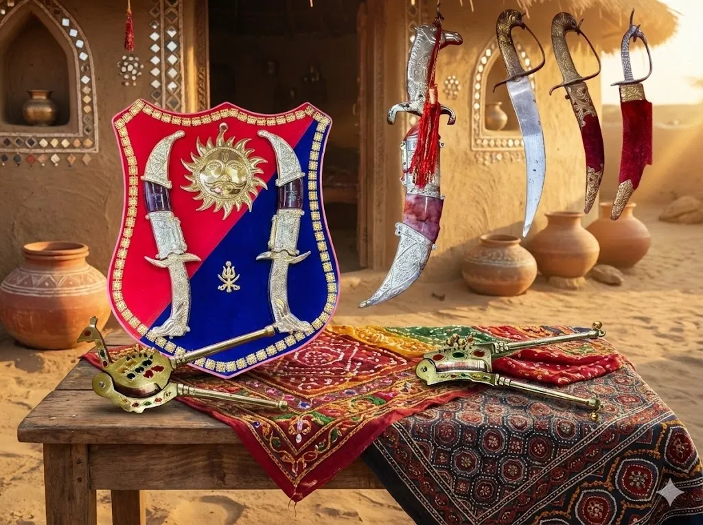
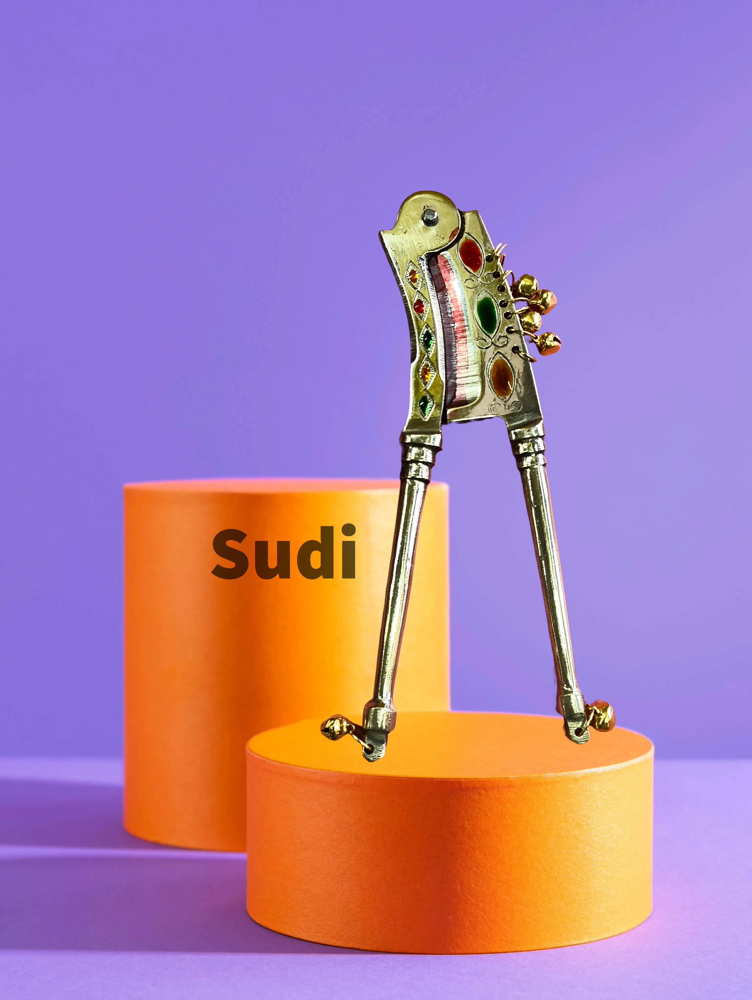
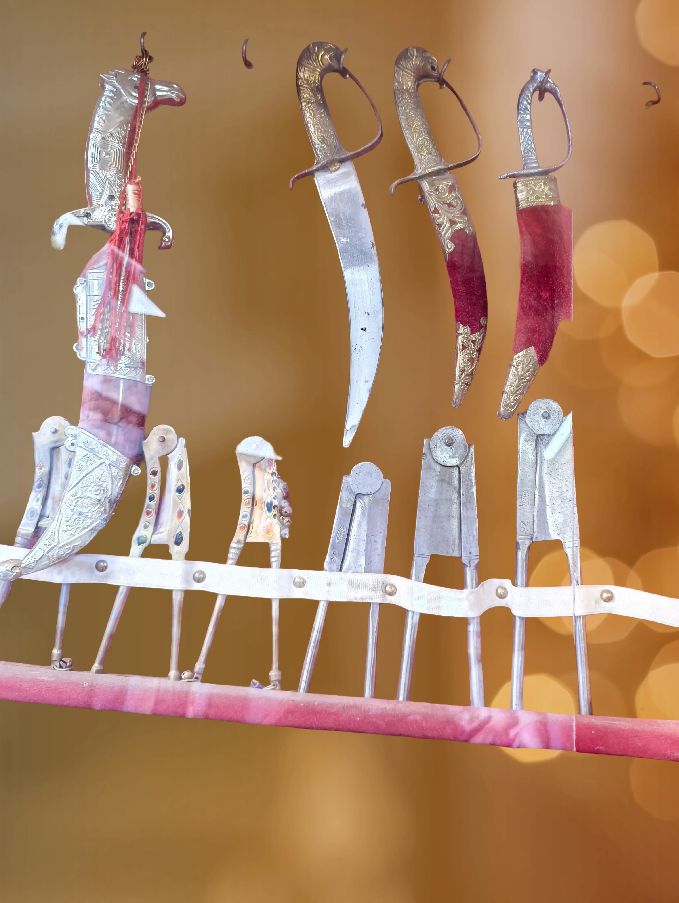

Overview
Sudi Chappu is the traditional knife-making craft of Anjar, a town in Kutch district. These aren

History
The knife-making tradition in Anjar dates back over 400 years. The craft was brought by metalworkers who settled in the region and found the local conditions ideal for forging high-quality blades. During the princely state era, Anjar knives were prized possessions, often presented as gifts to royalty. The Earthquake of 2001 destroyed many workshops, but the resilient artisans rebuilt and continue this proud tradition.
The Forging Process
Sudi Chappu making is a labor-intensive process that can take days for a single blade. The artisan starts by heating iron or steel in a traditional coal-fired furnace until it glows red-hot. The metal is then hammered repeatedly on an anvil to shape the blade, a process requiring immense skill to achieve the perfect curve and thickness. The blade is heated and cooled multiple times (tempering) to achieve the ideal hardness and flexibility.
Types of Knives
- •Chappu - Curved blade knives, the most common type
- •Sudi - Straight blade knives for precision work
- •Khanjar - Decorative daggers with ornate handles
- •Farming knives - Heavy-duty blades for agricultural use
- •Hunting knives - Specialized designs for hunters
- •Kitchen choppers - Traditional cooking knives
Handle Craftsmanship
The handles are crafted from various materials - buffalo horn (most common), rosewood, sandalwood, or even camel bone for premium pieces. The horn is carefully shaped, polished, and fitted with brass rivets. Many handles feature intricate brass inlay work or carved patterns. The balance between blade and handle is crucial - a well-made Sudi Chappu feels perfectly weighted in the hand.
Testing & Quality
Traditional knife makers test their blades in several ways: slicing paper to test sharpness, cutting rope to test edge retention, and checking flexibility by bending the blade. A quality Anjar knife should hold its edge for months of regular use, resist rust, and have a blade that springs back when flexed. Master craftsmen stamp their mark on the blade as a guarantee of quality.
Modern Challenges
The craft faces challenges from mass-produced industrial knives that are cheaper but lack the quality and character of handmade blades. The younger generation is less interested in this demanding craft. However, there
How to Identify Authentic Anjar Knives
- •Look for the artisan
- •Genuine buffalo horn handles have natural grain patterns
- •The blade should have visible hammer marks from hand forging
- •Weight should be well-balanced between blade and handle
- •Brass rivets should be flush and secure
- •The blade should have a slight flex without breaking
Buying Tips
- •Visit the knife-making street (Lohar Gali) in Anjar town
- •For buying in Bhuj contact : Opal Variety : 9825728452
- •Buy directly from the forge to ensure authenticity
- •Test the sharpness - a good blade cuts paper effortlessly
- •Check the handle fitting - should be tight with no wobble
- •Ask about the steel type used in the blade
- •Request maintenance instructions from the artisan
- •Negotiate respectfully - prices reflect hours of skilled work
Care & Maintenance
Keep the blade oiled with mustard oil or any food-safe oil to prevent rust. Store in a dry place, preferably in a leather sheath. Sharpen periodically on a whetstone - the artisan can show you the correct angle. Clean and dry immediately after use. Never put in a dishwasher. With proper care, an Anjar knife can last for generations.
Price Range
₹300 - ₹5,000 depending on size, materials, and craftsmanship. Basic utility knives (₹300-800), premium buffalo horn handle knives (₹1,000-2,500), decorative khanjar daggers (₹2,000-5,000), custom-made collector pieces (₹5,000+).
Did You Know?
Anjar knives are considered the sharpest traditional knives in Gujarat
A single knife can require over 100 hammer strikes during forging
Buffalo horn handles are preferred because they don
Traditional forges use manually operated bellows to heat the coal
Some knife-making families have been in the craft for 10+ generations
During festivals, special ceremonial knives with silver inlay are made
The 2001 earthquake destroyed most forges but couldn
Master artisans can identify the maker of a knife just by looking at it
Gallery



